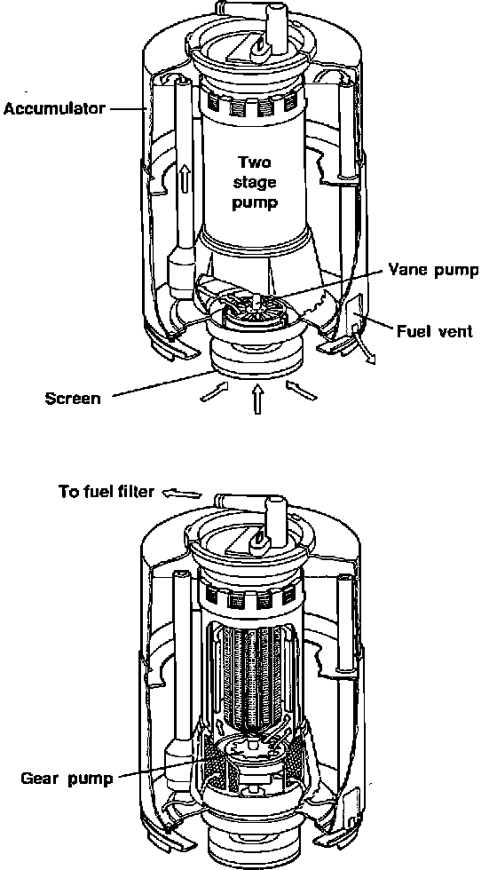

Fuel Pump: Description and Operation
Fuel Pump:

PURPOSE
The fuel pump delivers pressurized fuel to the fuel injection manifold.
LOCATION
The pump is submerged in the fuel tank.
CONSTRUCTION
The two-stage fuel pump assembly contains a single motor which drives two separate pumps. The primary pump contains a fuel strainer.
The pump housing functions as an accumulator.
OPERATION
Stage One
Fuel is drawn in through a screen at the bottom of the pump housing by a vane-type pump. The vane pump acts as a transfer pump to pressureize the accumulator.
Fuel vapors and air bubbles are forced out of the accumulator through a fuel vent.
Stage Two
The gear-type pump draws fuel from the bottom of the accumulator and through a screen. Fuel is then forced through the pump housing by the gear pump and out the top.